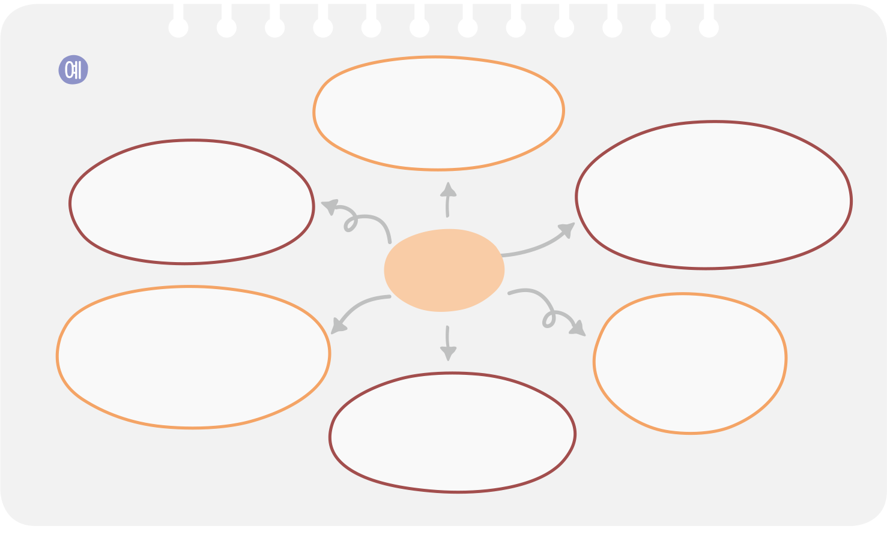
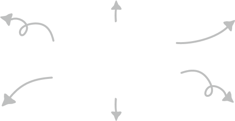

적용 활동
적용 활동
1 (2) (1)에서 정한 화자와 관련하여 떠오르는 것을 자유롭게 적어 보자.

신발 주인의 몸을
힘겹게 지고 다닌다.
밤이면 어두운
신발장 안에서 혼자 외로운
시간을 보낸다.
신발 주인의
발 모양으로
변했다.
가끔은 하늘 위를
가볍게 날고도 싶다.
신발 주인이
하루종일 무엇을 했는지
다 알고 있다.
땅에서 가까운
풍경들을 주로 본다.
내 신발
주인의 모든 비밀을
알고 있다.
알고 있다.
주인과 하루 종일 가장
많이 눈을 마주친다.
많이 눈을 마주친다.
주인에게
재미를 준다.
재미를 준다.
에너지를 소모한다.
주인이 외롭지 않게
소통을 도와준다.
소통을 도와준다.
유용한 도구이다.

내
스마트폰
스마트폰